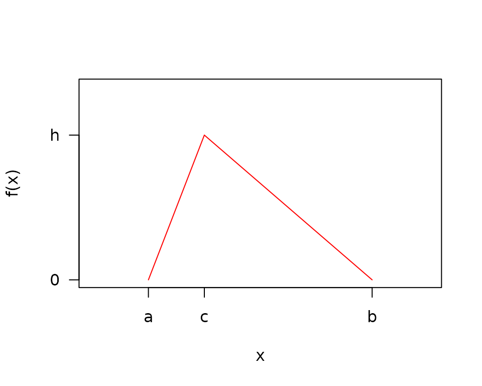

Triangle Distribution Math
Rob Carnell
2024-02-15
Source:vignettes/triangledistributionmath.Rmd
triangledistributionmath.RmdTriangle Notation

- \(a\) = minimum
- \(b\) = maximum
- \(c\) = mode
- \(h\) = density at the mode = \(\frac{2}{b-a}\)
Triangle PDF
\[f(x) = \left\{ \begin{array}{ll} \frac{h}{c-a}(x-a) & \mbox{if } a \leq x \leq c \\ \frac{h}{c-b}(x-b) & \mbox{if } c < x \leq b \\ 0 & \mbox{otherwise} \end{array} \right.\ \ \ \ (1)\]
Integrating the pdf in equation (1) to solve for h
\[\int f(x) dx = 1\]
\[\frac{h}{c-a}\int_{a}^{c} (x-a) dx + \frac{h}{c-b} \int_{c}^{b} (x-b) dx = \frac{h(b-a)}{2}\]
\[h=\frac{2}{b-a}\ \ \ \ (2)\]
Substituting back into equation (1),
\[f(x) = \left\{ \begin{array}{ll} \frac{2}{(b-a)(c-a)}(x-a) & \mbox{if } a \leq x \leq c \\ \frac{2}{(b-a)(c-b)}(x-b) & \mbox{if } c < x \leq b \\ 0 & \mbox{otherwise} \end{array} \right.\ \ \ \ (3)\]
Triangle Distribution Function
\[F_{x \le c}(x) = \int_{-\infty}^{x}f(t)dt = \int_a^x \frac{2(t-a)}{(b-a)(c-a)} dt\]
\[ = \frac{(x-a)^2}{(b-a)(c-a)}\]
\[F_{x \gt c}(x) = 1 - \int_x^b \frac{2(t-b)}{(b-a)(c-b)} dt\] \[ = 1 + \frac{(x - b)^2}{(b-a)(c-b)}\]
Triangle Mean
Integrating equation (3) to find \(E(x)\),
\[ \begin{align} E(X) &= \int xf(x)dx = \frac{2}{(b-a)(c-a)}\int_a^c (x^2-ax) dx + \frac{2}{(b-a)(c-b)}\int_c^b (x^2-bx) dx \\ &= \frac{a+b+c}{3}\ \ \ \ (4) \end{align} \]
Triangle Variance
\[ \begin{align} V(X) &= E(X^2) - \big(E(X)\big)^2 = \int x^2f(x)dx- \bigg(\frac{a+b+c}{3}\bigg)^2 \\ &= \frac{2}{(b-a)(c-a)}\int_{a}^{c} x^2(x-a) dx + \frac{2}{(b-a)(c-b)} \int_{c}^{b} x^2(x-b) dx- \bigg(\frac{a+b+c}{3}\bigg)^2 \\ &= \frac{a^2+b^2+c^2-ab-ac-bc}{18} \end{align} \]
Logarithmic Triangle distribution
Define:
\[a_l=\log_{\phi}(a),\ \ b_l=\log_{\phi}(b),\ \ c_l=\log_{\phi}(c),\ \ h=\frac{2}{b_l-a_l}, \ \ \phi = \mbox{log base}\]
\[f(z) = \left\{ \begin{array}{ll} \frac{h}{c_l - a_l}(z - a_l) & \mbox{if } a_l \leq z \leq c_l \\ \frac{h}{c_l - b_l}(z - b_l) & \mbox{if } c_l < z \leq b_l \\ 0 & \mbox{otherwise} \end{array} \right.\ \ \ \ (5)\]
However,
\[E({\phi}^z) \neq {\phi}^{E(z)}\ \ \ \ (6)\]
Therefore, transforming…
\[Y={\phi}^Z\]
\[Z=\log_{\phi}(Y)\]
\[w(y)=\log_{\phi}(y)\]
\[w'(y)=\frac{dz}{dy} = \frac{1}{y\log({\phi})}\]
\[g(y)=f(w(y))w'(y)\]
\[g(y) = \left\{ \begin{array}{ll} \frac{2}{(c_l-a_l)(b_l-a_l)\log({\phi})}\frac{log_{\phi}(y) - a_l}{y} & \mbox{if } 0 < a \leq y \leq c \\ \frac{2}{(c_l-b_l)(b_l-a_l)\log({\phi})}\frac{log_{\phi}(y) - b_l}{y} & \mbox{if } c < y \leq b \\ 0 & \mbox{otherwise} \end{array} \right.\ \ \ \ (7)\]
Define:
\[\beta_1=\frac{2}{(c_l-a_l)(b_l-a_l)}\]
\[\beta_2=\frac{2}{(c_l-b_l)(b_l-a_l)}\]
Finding the CDF,
\[G(y) = \int_{-\infty}^y g(y)dy\]
\[ \begin{align} \mbox{for}\ a \leq y \leq c,\ \ G(y) &= \frac{\beta_1}{\log({\phi})} \int_a^y \frac{\log(y)}{y\log({\phi})}-\frac{a_l}{y}dy \\ &=\beta_1 \bigg[\frac{\log_{\phi}^2(y)}{2} - a_l \log_{\phi}(y) - \frac{a_l^2}{2} + a_l^2\bigg] \end{align} \]
\[ \begin{align} \mbox{for}\ c < y \leq b,\ \ G(y) &= G(c) + \frac{\beta_2}{\log({\phi})} \int_c^y \frac{\log(y)}{y\log({\phi})} - \frac{b_l}{y}dy \\ &=G(c) + \beta_2 \bigg[\frac{\log_{\phi}^2(y)}{2} - b_l \log_{\phi}(y) - \frac{c_l^2}{2} + b_l c_l\bigg] \end{align} \]
Checking that the CDF is 1 at b,
\[ \begin{align} G(b) &= \frac{c_l^2 - 2a_l c_l + a_l^2}{(c_l-a_l)(b_l-a_l)} + \frac{-b_l^2-c_l^2+2b_lc_l}{(c_l-b_l)(b_l-a_l)} \\ &= \frac{c_l-a_l}{b_l-a_l} + \frac{-(c_l-b_l)}{b_l-a_l} = 1 \end{align} \]
Now calculating \(E(y)\),
\[ \begin{align} E(y) &= \int y\ g(y)\ dy \\ &=\frac{\beta_1}{\log({\phi})} \int_a^c \bigg[\frac{\log(y)}{\log({\phi})} - a_l\bigg]dy + \frac{\beta_2}{\log({\phi})} \int_c^b \bigg[\frac{\log(y)}{\log({\phi})} - b_l\bigg]dy \\ &=\frac{c\beta_1}{\log^2({\phi})} \bigg[\log(c) - 1 - \log(a) + \frac{a}{c} \bigg] + \frac{c\beta_2}{\log^2({\phi})} \bigg[\frac{-b}{c} - \log(c) + 1 + \log(b) \bigg] \end{align} \]
Method of Moments Estimation
\[E(x) = \frac{a + b + c}{3}\]
\[c = 3E(x) - a - b\]
\[\hat{a} = min(x)\]
\[\hat{b} = max(x)\]
\[\hat{c} = 3\bar{x} - \min(x) - \max(x)\]
Maximum Likelihood Estimation
The procedure for maximum likelihood estimation involves maximizing the likelihood with respect to \(c\) for a fixed \(a\) and \(b\), followed by minimizing the negative log likelihood with respect to \(a\) and \(b\) for a fixed \(c\).
Maximizing the Likelihood with respect to \(c\)
This discussion follows the results from Samuel Kotz and Johan Rene van Dorp. Beyond Beta
For the purposes of this section, with a fixed \(a\) and \(b\), the sample can be easily rescaled to \(a=0\) and \(b=1\). This section will proceed on \([0,1]\) with the mode at \(0 \le c \le 1\)
\[w(x) = \left\{ \begin{array}{ll} \frac{2x}{c} & \mbox{if } 0 \le x \lt c \\ \frac{2(1-x)}{1-c} & \mbox{if } c \le x \leq 1 \\ 0 & \mbox{otherwise} \end{array} \right.\]
\[L(x|c) = \prod_{i}^{n} w(x|c)\]
Assume that the sample is ordered into order statistics \(X_{(1)} \lt \dots \lt X_{(n)}\). Also, note that \(X_{(r)} \le c \lt X_{(r+1)}\). In other words, the mode falls between the \(r^{th}\) and \(r+1\) order statistics.
\[L(x|c) = \prod_{i=1}^{r} \frac{2x_{(i)}}{c} \prod_{i=r+1}^{n} \frac{2(1-x_{(i)})}{1-c} = \frac{2^n \prod_{i=1}^{r} x_{(i)} \prod_{i=r+1}^{n} (1-x_{(i)})}{c^r(1-c)^{n-r}}\]
To maximize the likelihood, we can first maximize with respect to \(r\) and then locate \(c\) between the \(r^{th}\) and \(r+1\) order statistics. For notation purposes, also define \(X_{(0)} = 0\) and \(X_{(n+1)} = 1\).
\[\large \max_{0 \le c \le 1} L(x|c) = \max_{r \ \epsilon \ (0,\dots,n)} \ \ \max_{x_{(r)} \le c \le x_{(r+1)}} \ \ L(x|c)\]
Case 1: \(c\) is between the first and second to last order statistic \(r \ \epsilon \ (1, \dots, n-1)\)
Noticing that maximizing the likelihood is equivalent to minimizing the denominator:
\[\large \max L(x|c) = \max_{r \ \epsilon \ (1,\dots,n-1)} \ \ \min_{x_{(r)} \le c \le x_{(r+1)}} \ \ c^r(1-c)^{n-r}\]
Since \(c^r(1-c)^{n-r}\) is unimodal with respect to \(c\), it should be sufficient to test the end points of an interval to find the minimum on the interval
\[\large = \max_{r \ \epsilon \ (1,\dots,n-1)} \ \ \min_{c \ \epsilon \ (x_{(r)},\ \ x_{(r+1)})} \ \ c^r(1-c)^{n-r}\]
Therefore, for this case, it is sufficient to test the likelihood using \(c\) at each of the sampled points and find the largest.
Side note on \(z=c^r(1-c)^{n-r}\) being unimodal
\[\frac{dz}{dc} = rc^{(r-1)}(1-c)^{n-r} + c^r(n-r)(1-c)^{n-r-1}(-1) = c^{(r-1)}(1-c)^{n-r-1}(r - cn)\]
\(\frac{dz}{dc} = 0\) at \(c=0,\ 1,\ \frac{r}{n}\). At \(0 < c < \frac{r}{n}\), \(z\) is positive, and at \(\frac{r}{n} < c < 1\), \(z\) is negative. Therefore, \(z\) is unimodal on \((0,1)\).
Case 2: \(c\) is between 0 and the first order statistic \(r = 0\)
\[\large \max L(x|c) = \max_{0 \le c \le x_{(1)}} \prod_{i=1}^{n} \frac{1-x_{(i)}}{1-c} = \prod_{i=1}^{n} \frac{1-x_{(i)}}{1-x_{(1)}}\]
Choosing the largest endpoint in the interval, creates the smallest denominator, and the largest likelihood.
Therefore, for this case, it is sufficient to test the likelihood using \(c\) at the first sampled point.
Case 3: \(c\) is between the last order statistic \(r = n\) and 1
\[\large \max L(x|c) = \max_{x_{(n)} \le c \le 1} \prod_{i=1}^{n} \frac{x_{(i)}}{c} = \prod_{i=1}^{n} \frac{x_{(i)}}{x_{(n)}}\]
Choosing the smallest option in the denominator creates the largest likelihood. Again, it is sufficient to test the likelihood using \(c\) at the largest sample point.
All Cases
For all cases, it is sufficient to compute the sample likelihood using \(c\) equal to each of the samples, and choosing the largest likelihood from the \(n\) options to find the corresponding \(c\). This calculation is performed with a fixed \(a\) and \(b\), so the test must be performed iteratively as \(a\) and \(b\) are separately optimized.
Negative Log Likelihood
\[ \begin{align} nLL &= -\log(L) = -\log\left(\prod_i^n f(x_i)\right) \\ &= - \sum_i^n \log\left(f(x_i)\right) = - \sum_{i: \ a \le x_i \lt c}^{n_1} \log\left(f(x_i)\right) - \sum_{i: \ c \le x_i \le b}^{n_2} \log\left(f(x_i)\right) \end{align} \]
where \(n = n_1 + n_2\)
Case 1: \(a = c \lt b\)
\[ \begin{align} nLL &= - \sum_{i}^{n} \log(2) + \log(b-x_i) - \log(b-a) - \log(b-c) \\ &= -n\log(2) + n\log(b-a) + n \log(b-c) - \sum_{i}^{n} \log(b-x_i) \end{align} \]
Case 2: \(a \lt c = b\)
\[ \begin{align} nLL &= - \sum_{i}^{n} \log(2) + \log(x_i - a) - \log(b-a) - \log(c-a) \\ &= -n\log(2) + n\log(b-a) + n\log(c-a) - \sum_{i}^{n} \log(x_i - a) \end{align} \]
Case 3: \(a \lt c \lt b\)
\[ \begin{align} nLL &= - \sum_{i: \ a \lt x_i \lt c}^{n_1} \log(2) + \log(x_i - a) - \log(b-a) - \log(c-a) - \sum_{i: \ c \le x_i \lt b}^{n_2} \log(2) + \log(b-x_i) - \log(b-a) - \log(b-c) \\ &= -n\log(2) + n\log(b-a) + n_1\log(c-a) + n_2 \log(b-c) - \sum_{i: \ a \lt x_i \lt c}^{n_1} \log(x_i - a) - \sum_{i: \ c \le x_i \lt b}^{n_2} \log(b-x_i) \end{align} \]
Gradient of the negative Log Likelihood Given \(c\):
The negative log likelihood is not differentiable with respect to \(c\) because the limits of the sum (\(n_1\) and \(n_2\)) are functions of \(c\). Therefore the gradient and hessian are derived as if \(c\) is fixed.
Case 1: \(a = c \lt b\)
\[\frac{\partial nLL}{\partial a} = - \frac{n}{b-a}\]
\[\frac{\partial nLL}{\partial b} = \frac{n}{b-a} + \frac{n}{b-c} - \sum_i^{n} \frac{1}{b-x_i}\]
Hessian of the negative Log Likelihood Given \(c\):
Case 1: \(a = c \lt b\)
\[\frac{\partial^2nLL}{\partial a^2} = - \frac{n}{(b-a)^2}\]
\[\frac{\partial^2 nLL}{\partial b^2} = -\frac{n}{(b-a)^2} - \frac{n}{(b-c)^2} + \sum_i^{n} \frac{1}{(b-x_i)^2}\]
\[\frac{\partial^2 nLL}{\partial a\partial b} = \frac{\partial^2 nLL}{\partial b\partial a} = - \frac{n}{(b-a)^2}\]
Case 2: \(a \lt c = b\)
\[\frac{\partial^2 nLL}{\partial a^2} = - \frac{n}{(b-a)^2} - \frac{n}{(c-a)^2} + \sum_i^{n} \frac{1}{(x_i - a)^2}\]
\[\frac{\partial^2 nLL}{\partial b^2} = - \frac{n}{(b-a)^2}\]
\[\frac{\partial^2 nLL}{\partial a\partial b} = \frac{\partial^2 nLL}{\partial b\partial a} = - \frac{n}{(b-a)^2}\]
Case 3: \(a \lt c \lt b\)
\[\frac{\partial^2 nLL}{\partial a^2} = - \frac{n}{(b-a)^2} - \frac{n_1}{(c-a)^2} + \sum_i^{n_1} \frac{1}{(x_i - a)^2}\]
\[\frac{\partial ^2 nLL}{\partial b^2} = -\frac{n}{(b-a)^2} - \frac{n_2}{(b-c)^2} + \sum_i^{n_2} \frac{1}{(b-x_i)^2}\]
\[\frac{\partial ^2 nLL}{\partial a\partial b} = \frac{\partial ^2 nLL}{\partial b\partial a} = - \frac{n}{(b-a)^2}\]
MLE Variance - Covariance
For the optimization of \((a,b)\) given \(c\), we can use the inverse of the hessian of the negative log likelihood for an estimate of the covariance matrix of \(\hat{a}\) and \(\hat{b}\). For the variance in \(\hat{c}\), we use the variance of the \(r^{th}\) order statistic which corresponds to \(c\). The covariance of \((a,b)\) and \(c\) is not computed because the negative log likelihood is not differentiable with respect to \(c\).
Let \(H\) denote the Hessian matrix, and let \(H^{-1}[1,1]\) be the \(V(\hat{a})\), \(H^{-1}[2,2]\) be the \(V(\hat{b})\), and \(H^{-1}[1,2] = H^{-1}[2,1]\) be the \(Cov(\hat{a}, \hat{b})\). Then,
\[ V([\hat{a}, \hat{b}, \hat{c}]) = \begin{bmatrix} H^{-1}[1,1] & H^{-1}[1,2] & 0 \\ H^{-1}[2,1] & H^{-1}[2,2] & 0 \\ 0 & 0 & V(\hat{c}) \\ \end{bmatrix} \]
Expected value of the \(r^{th}\) order statistic
\[ \begin{align} E(X_{(r)}) &= \int x f(x_{(r)}) dx \\ &= \int_a^c xr {n \choose r} \frac{2(x-a)}{(b-a)(c-a)} \left(\frac{(x-a)^2}{(b-a)(c-a)}\right)^{r-1}\left(1 - \frac{(x-a)^2}{(b-a)(c-a)}\right)^{n-r}dx \\ &+ \int_c^b xr {n \choose r} \frac{2(x-b)}{(b-a)(c-b)} \left(1+\frac{(x-b)^2}{(b-a)(c-b)}\right)^{r-1}\left(- \frac{(x-b)^2}{(b-a)(c-b)}\right)^{n-r}dx \end{align} \]
To simplify the notation, define:
\[\gamma_0 = 2r {n \choose r}\]
\[\gamma_1 = (b-a)(c-a)\]
\[\gamma_2 = (b-a)(c-b)\]
Continuing:
\[E(X_{(r)}) = \int_a^c \frac{\gamma_0}{\gamma_1^n} x(x-a)^{2r-1} \left(\gamma_1 - (x-a)^2\right)^{n-r}dx + \int_c^b \frac{\gamma_0}{\gamma_2^n} (-1)^{n-r}x(x-b)^{2n-2r+1} \left(\gamma_2 + (x-b)^2\right)^{r-1}dx\]
By using a binomial expansion, we can prevent having to integrate by parts multiple times.
\[(a+b)^n = \sum_{k=0}^n {n \choose k} a^kb^{n-k}\]
\[ \begin{align} E(X_{(r)}) &= \int_a^c \frac{\gamma_0}{\gamma_1^n} x(x-a)^{2r-1} \sum_{k=0}^{n-r} {n-r \choose k} \gamma_1^k (-1)^{n-r-k}(x-a)^{2n-2r-2k}dx \\ &+ \int_c^b \frac{\gamma_0}{\gamma_2^n} (-1)^{n-r}x(x-b)^{2n-2r+1} \sum_{k=0}^{r-1} {r-1 \choose k} \gamma_2^k (x-b)^{2r-2-2k}dx \end{align} \]
\[ \begin{align} E(X_{(r)}) &= \frac{\gamma_0}{\gamma_1^n} \sum_{k=0}^{n-r} {n-r \choose k} \gamma_1^k (-1)^{n-r-k}\int_a^c x(x-a)^{2n-2k-1}dx \\ &+ \frac{\gamma_0}{\gamma_2^n} (-1)^{(n-r)} \sum_{k=0}^{r-1} {r-1 \choose k} \gamma_2^k \int_c^b x(x-b)^{2n-2k-1}dx \end{align} \]
\[ \begin{align} E(X_{(r)}) &= \gamma_0 \sum_{k=0}^{n-r} {n-r \choose k} \gamma_1^{k-n} (-1)^{n-r-k} \left[\frac{c(c-a)^{2n-2k}}{2n-2k} - \frac{(c-a)^{2n-2k+1}}{(2n-2k)(2n-2k+1)}\right] \\ &+ \gamma_0 (-1)^{n-r} \sum_{k=0}^{r-1} {r-1 \choose k} \gamma_2^{k-n} \left[\frac{-c(c-b)^{2n-2k}}{2n-2k}+\frac{(c-b)^{2n-2k+1}}{(2n-2k)(2n-2k+1)}\right] \end{align} \]
\[ \begin{align} E(X_{(r)}) &= r {n \choose r} \sum_{k=0}^{n-r} {n-r \choose k} (b-a)^{k-n} (c-a)^{n-k} (-1)^{n-r-k} \left[\frac{c}{n-k} - \frac{c-a}{(n-k)(2n-2k+1)}\right] \\ &+ r {n \choose r} (-1)^{n-r} \sum_{k=0}^{r-1} {r-1 \choose k} (b-a)^{k-n} (c-b)^{n-k} \left[\frac{-c}{n-k}+\frac{c-b}{(n-k)(2n-2k+1)}\right] \end{align} \]
\[ \begin{align} E(X_{(r)}) &= r {n \choose r} \bigg[ \ \sum_{k=0}^{n-r} {n-r \choose k} (b-a)^{k-n} (c-a)^{n-k} (-1)^{n-r-k} \frac{2c(n-k)+a}{(n-k)(2(n-k) + 1)} \\ &+ (-1)^{n-r+1} \sum_{k=0}^{r-1} {r-1 \choose k} (b-a)^{k-n} (c-b)^{n-k} \frac{2c(n-k)+b}{(n-k)(2(n-k)+1)} \ \bigg] \end{align} \]
Expected Value of \(r^{th}\) order statistic squared
Continuing from the above derivation:
\[ \begin{align} E(X_{(r)}^2) &= \frac{\gamma_0}{\gamma_1^n} \sum_{k=0}^{n-r} {n-r \choose k} \gamma_1^k (-1)^{n-r-k}\int_a^c x^2(x-a)^{2n-2k-1}dx \\ &+ \frac{\gamma_0}{\gamma_2^n} (-1)^{(n-r)} \sum_{k=0}^{r-1} {r-1 \choose k} \gamma_2^k \int_c^b x^2(x-b)^{2n-2k-1}dx \end{align} \]
\[ \begin{align} E(X_{(r)}^2) &= \gamma_0 \sum_{k=0}^{n-r} {n-r \choose k} \gamma_1^{k-n} (-1)^{n-r-k} \frac{(c-a)^{2n-2k}}{2n-2k}\left[c^2 - \frac{2c(c-a)}{2n-2k+1} + \frac{2(c-a)^2}{(2n-2k+1)(2n-2k+2)}\right] \\ &+ \gamma_0 (-1)^{(n-r)} \sum_{k=0}^{r-1} {r-1 \choose k} \gamma_2^{k-n} \frac{(c-b)^{2n-2k}}{2n-2k}\left[-c^2 + \frac{2c(c-b)}{2n-2k+1}-\frac{2(c-b)^2}{(2n-2k+1)(2n-2k+2)}\right] \end{align} \]
\[ \begin{align} E(X_{(r)}^2) &= r {n \choose r} \sum_{k=0}^{n-r} {n-r \choose k} (b-a)^{k-n} (c-a)^{n-k} (-1)^{n-r-k} \frac{1}{n-k}\left[c^2 - \frac{2c(c-a)}{2n-2k+1} + \frac{2(c-a)^2}{(2n-2k+1)(2n-2k+2)}\right] \\ &+ r {n \choose r} (-1)^{(n-r)} \sum_{k=0}^{r-1} {r-1 \choose k} (b-a)^{k-n} (c-b)^{n-k} \frac{1}{n-k}\left[-c^2 + \frac{2c(c-b)}{2n-2k+1}-\frac{2(c-b)^2}{(2n-2k+1)(2n-2k+2)}\right] \end{align} \]
Variance of the \(r^{th}\) order statistic
\[V\left(X_{(r)}\right) = E(X_{(r)}^2) - \left[E(X_{(r)})\right]^2\]
Numerical Stability of Variance and Expected value of \(r^{th}\) order statistic
Although the above derivation gives an exact solution to the variance
and expected value of the \(r^{th}\)
order statistic of the triangle distribution, the alternative sign
inside the binomial sum and the large orders of magnitude over which
those coefficients span lead to cancellation errors in the results that
are not easy to solve. Exact solutions can be obtained to arbitrary
precision through the use a package like Rmpfr. The
triangle package defaults to the use of numerical
integration for these results.